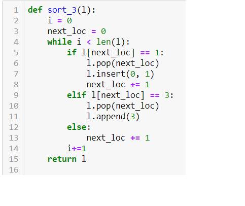
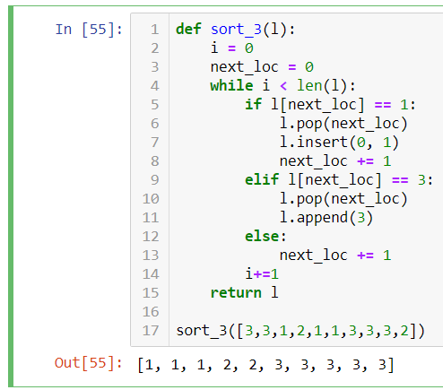

אני חושב שגם זה עונה על השאלה

אתה מדלג על איברים אם יש לך 3 באמצע
אני לא. בגלל שה-3 עובר לאיבר האחרון. האיבר הבא נשאר במיקום של ה-3 ולכן אני לא עולה במיקום

הוספתי שני איסורים חדשים, להעלאת רמת הקושי מעט:
- אסור לבצע פעולות על רשימה
- אסור ליצור רשימה חדשה
הפונקציה צריכה להחזיר רשימה? או פשוט להדפיס מספרים
להחזיר רשימה, כמובן 
מעניין. מעלה את האתגר.
יכול להיות שפספתי משהו.
אם אני לא מבצע פעולות על רשימה. איך אני משנה אותה?
l[i] = 5 לא נחשב פעולה על רשימה
מנסה את מזלי
def sort_3(l):
i = 1
while i < len(l):
if l[i] == 1:
if l[i-1] == 1:
i += 1
else:
helper = l[i-1]
l[i-1] = 1
l[i] = helper
i -= 1
elif l[i] == 2:
if l[i-1] <= 2:
i += 1
else:
helper = l[i-1]
l[i-1] = 2
l[i] = helper
i -= 1
elif l[i] == 3:
i += 1
return ldef sort_3(list3):
index = count1 = count2 = count3 = 0
while index < len(list3):
if list3[index] == 1:
count1 += 1
elif list3[index] == 2:
count2 += 1
elif list3[index] == 3:
count3 += 1
index += 1
list3 = []
list3 = ([1] * count1) + ([2] * count2) + ([3] * count3)
return list3יפה! עכשיו בלי ליצור רשימה חדשה
כשל בטסטים 
מקווה שזה הניסיון האחרון
def sort_3(l):
i = 1
while i < len(l):
if i == 0:
i += 1
if l[i] == 1:
if l[i-1] == 1:
i += 1
else:
helper = l[i-1]
l[i-1] = 1
l[i] = helper
i -= 1
elif l[i] == 2:
if l[i-1] <= 2:
i += 1
else:
helper = l[i-1]
l[i-1] = 2
l[i] = helper
i -= 1
elif l[i] == 3:
i += 1
return lזה אכן עובד, אבל בגלל i -= 1 אתה מסתכל על איברים הרבה יותר מפעם אחת
הצגתי למעלה את הפתרון שלי, כשאני מריץ את הטסטר אני לא מקבל שום תוצאה. זה אומר שזה תקין?
כן, אבל כמו שאמרתי – עכשיו נסה בלי ליצור רשימה חדשה
אבל אני לא יוצר רשימה חדשה, אני משנה את הקיימת.
ברגע שעשית השמה לתוך list3, וברגע ששירשרת תתי־רשימות – אתה יוצר רשימה חדשה
טוב איתגרת אותי, וזו התוצאה:
def sort_3(list3):
index = count1 = count2 = count3 = 0
length = len(list3)
while index < len(list3):
if list3[index] == 1:
count1 += 1
elif list3[index] == 2:
count2 += 1
elif list3[index] == 3:
count3 += 1
index += 1
list3 += ([1] * count1) + ([2] * count2) + ([3] * count3)
return list3[length:]